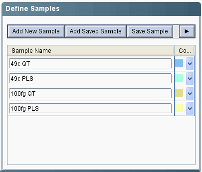

Plate Setup
It is important that the plate be setup using the target
and sample assignments provided by the version 2 software, and that these
correspond to the amplicon and sample names, respectively.
An example of defining amplicon names
An example of defining sample names

The plate setup also provides the ability to designate which wells are standards (i.e. calibration profiles) under the "Task" column. It is also important to enter the amount lambda gDNA in femtograms into the "Quantity" column for each calibration well.
Assigning calibration wells and lambda gDNA quantity (100
fg)

The program import function is designed to take advantage of all of these features, so it is essential that this be done correctly.
Removing ROX normalization
It is important to turn off ROX normalization, which has not been found to increase quantitative accuracy. The menu
for turning normalization off is located at the bottom of the "Assign Targets
and Samples" page located within the "Plate Setup" in the Setup menu:

Export data to an Excel file
Go to "Export" located in the toolbar.
Set data to export to Results and Amplification Data, select one file for data export, and select "Open file(s) when export is complete". You may want to change the "Export File Location:" to a more convenient location, in that you will later need to select this file for data import. The Excel workbook should then open automatically.

Enter the Run Date
The only modification required is to re-enter the Run date in the Results sheet, located at B4. The run date can be entered in short form, e.g. 5sep10, and pressing enter.
SAVE THE FILE...
Open "Import" on the menu bar, select "AB 7500 Version 2", which will open the file selection dialog. Select the the completed Excel import file and press "Open".